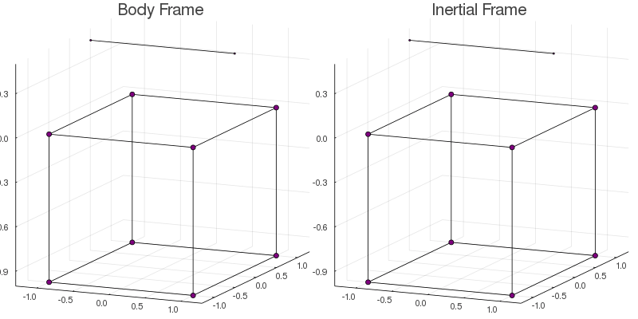

Tutorial: The Cubecopter
In this page we model the movement of a simple deformable body on a reference frame moving with it and then solve the problem to find its trajectory from the point of view of an inertial frame.
The example body will be a cube attached to rotating helix, from now on comradely referred to as the cubecopter. Each particle is represented by a PointMass, and the full body is an array of point masses.
r_0 = [
PointMass(1., [ 1., 1., 0.])
, PointMass(1., [ 1., -1., 0.])
, PointMass(1., [-1., 1., 0.])
, PointMass(1., [-1., -1., 0.])
, PointMass(1., [ 1., 1., -1.])
, PointMass(1., [ 1., -1., -1.])
, PointMass(1., [-1., 1., -1.])
, PointMass(1., [-1., -1., -1.])
, PointMass(.5, [-1., 0., .5])
, PointMass(.5, [ 1., 0., .5])
]For visualization purposes, the plot function from Plots.jl is overloaded to work with arrays of point masses.
using Plots: plot
plot(r_0)It may be hard to visualize a lot of points scattered on a 3D graph. Therefore, the plot function is also overloaded to accept a parameter bodylines connecting some particles. It does not interferes on the dynamics and serves only for aiding visualization.
Below is a nasty hack for calculating the cubecopter's edges. You do not have to understand it. The important part is that the variable edges is an array of indexes representing which points should be connected.
edges = Tuple[]
for i = 1:length(r_0), j = i:length(r_0)
if count(a -> first(a) == last(a), zip(pos(r_0[i]),pos(r_0[j]))) == 2
push!(edges, (i,j))
end
endplot(r_0, bodylines=edges)Much better, right?
Now, the array r_0 represents a stationary body. What we want is a trajectory over time, represented by an array of functions. Our chosen trajectory will be a stationary cube with an helix rotating counter-clockwise over it.
For the cube part, we represent these as constant functions.
# Define an array of trajectories
trajectories = Function[]
for x in r_0[1:end-2]
push!(trajectories, let x=x; t -> x;end)
endWhile the helix movement is done using the function rotate over a fixed axis with an angle varying over time.
const ω = 2*π/5.0 # Angular velocity
const z_axis = [0., 0., 1.] # Axis of rotation is orthogonal to helix
for x in r_0[end-1:end]
push!(trajectories, let x=x; t -> rotate(x, axis=z_axis, angle=ω*t); end)
endWith this, we complete the code for the trajectory on the body frame. Let's animate it so we can see how the trajectory behaves.
using Plots: @gif, Animation, frame, gif
@gif for t in 0.:0.1:7.
plot([ x(t) for x in trajectories], bodylines=edges)
endIt is now time to define the problem's model and find the trajectory on the inertial frame. First, we need to define some initial data.
tstart = 0.
tend = 5.
initial_rotation = one(Quaternion)
initial_angular_momentum = zeros(3)The variables tstart and tend define respectively the starting and ending time for the dynamics. The other two variables are the initial data necessary to solve the differential equation. The term one(Quaternion) is our way to represent the identity rotation, meaning that at the starting time, the inertial frame coincides with the body frame. The variable initial_angular_momentum is set to zero, meaning that at the beginning of the trajectory, the body has zero angular momentum from the point of view of the inertial frame.
With this information, we are ready to define our Model.
model = Model( trajectories
, tstart
, tend
, initial_rotation
, initial_angular_momentum
)Now that everything is setted up, finding the inertial frame trajectory is as simple as writing
solve!(model)To visualize the final result, we can use the function plotmodel to plot and save an animation of the dynamics of both frames side by side.
plotmodel( model
, :both
, saveas="cubecopter.gif"
, bodylines=edges # Only for visualization
, duration=5.0 # Duration in seconds
)
In the inertial frame, the cube rotates in the opposite direction to the helix guaranteeing that the total angular momentum is conserved.